AI 낚시 지수부터 어종별 입질확률, 물때·조석, 해양 레저 테마별 예보까지.
어업인과 해양 레저 인구 모두를 위한 데이터 기반 해양 내비게이터.
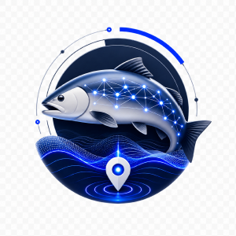
01사용자 위치 기반 낚시·해루질 활동지수를 점수로 제공. 오늘 나갈지 말지, 한 번에 판단합니다.
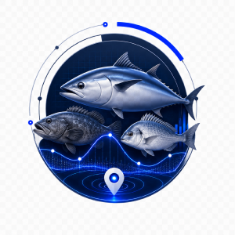
025km 격자 해구 기준 시기별 서식 수산생물의 활성도를 분석·예측해 입질 확률로 안내합니다.
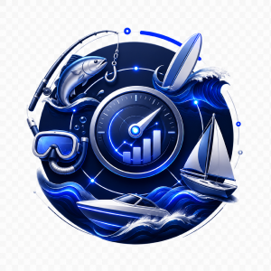
03낚시·해루질·서핑·스쿠버다이빙·레저보트·세일링 등 종목별로 최적화된 활동지수를 제공합니다.
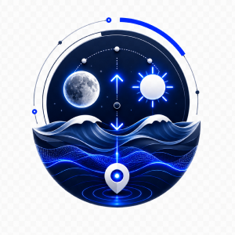
04조과에 직결되는 물때, 조류, 일출·일몰, 월령 정보를 시각화해 보여줍니다.
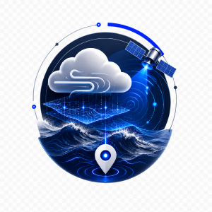
05MME 오차 보정 기술 기반, 연안·수상·수중 활동에 최적화된 해양 전문 예보를 제공합니다.
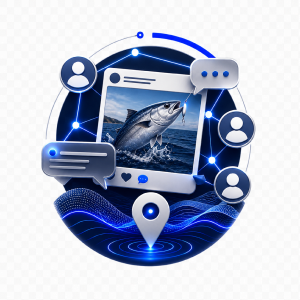
06실시간 조과 공유와 포인트 정보, 어신FRIENDS와 함께하는 낚시 커뮤니티.
해양 정보 서비스 분야 최단 기간 트래픽 1위 달성 (Google Play Console)
TOSS 앱인토스 챌린지 선정 · 최고 앱 TOP 10
전체 사용자 중 구매력 높은 30~50대 비중
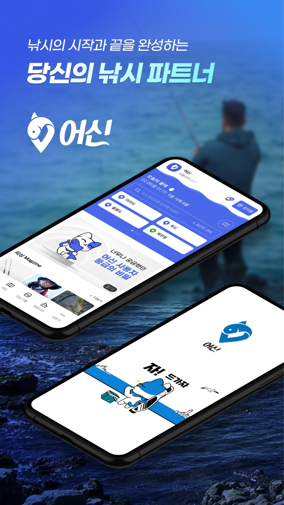
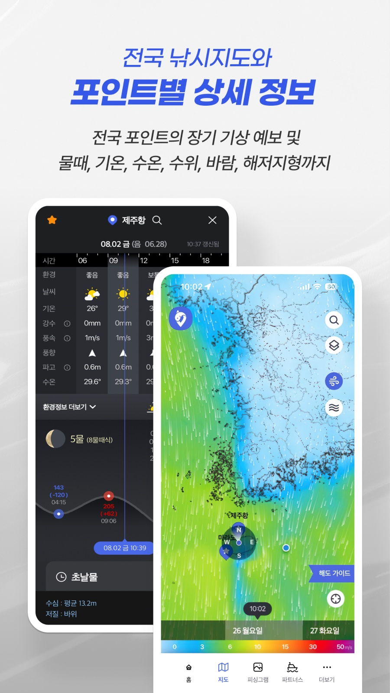
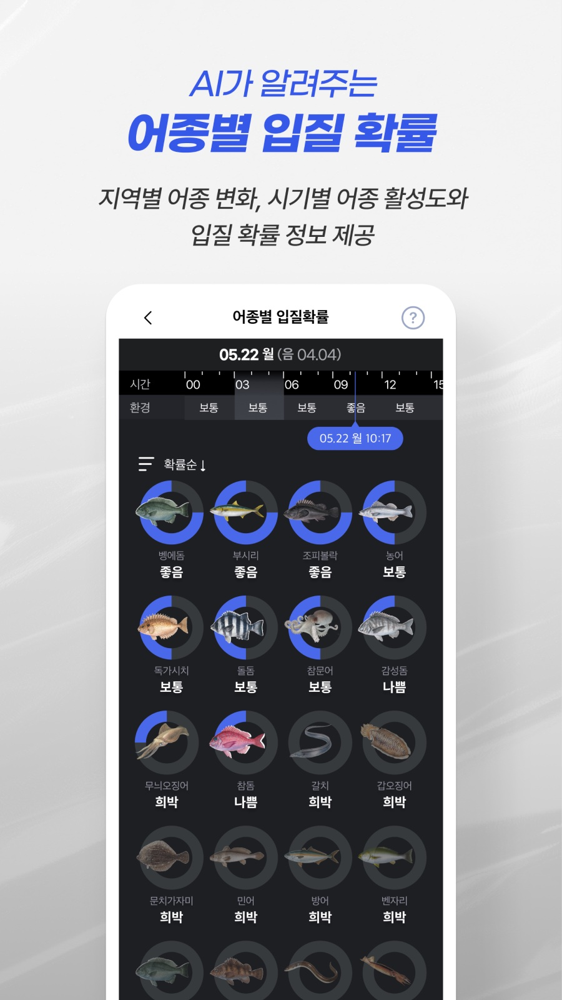
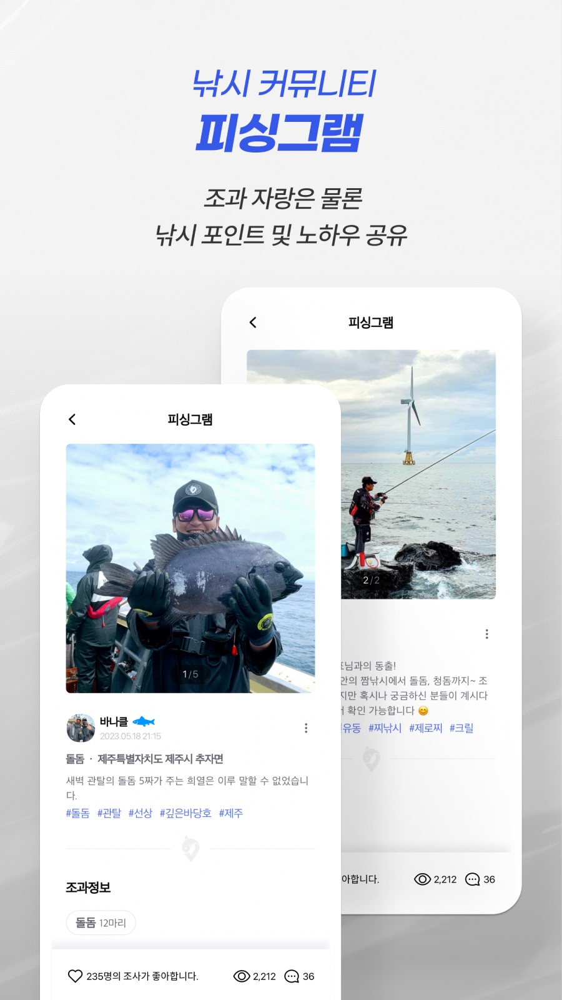
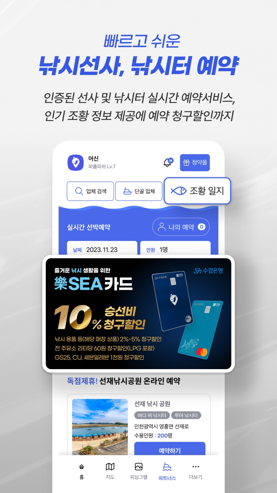
83만 명이 선택한 해양 내비게이터. 무료로 시작할 수 있습니다.